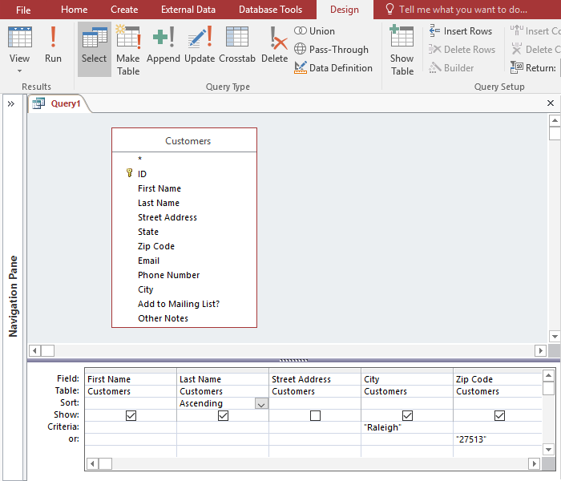
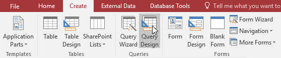
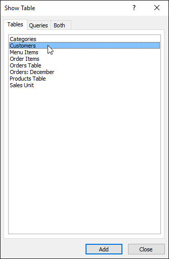
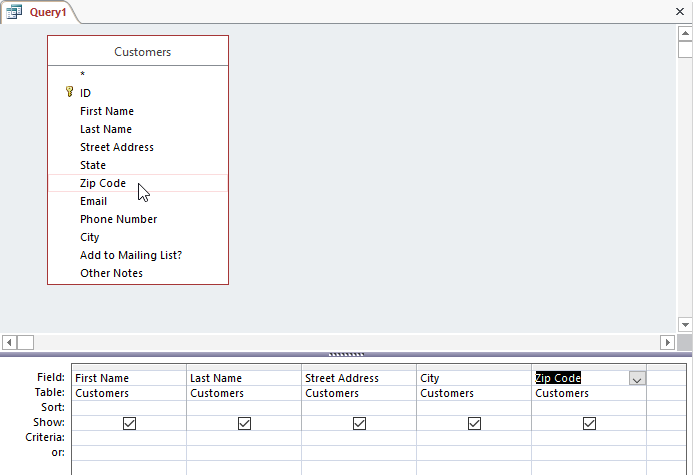
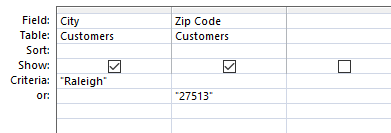
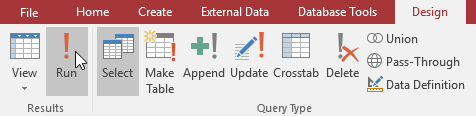
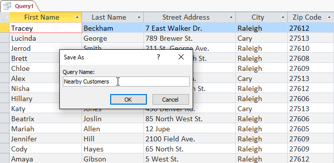

Puterea reală a unei baze de date relaționale constă în capacitatea sa de a vă recupera și analiza rapid datele prin rularea unei interogări. Interogările vă permit să extrageți informații dintr-unul sau mai multe tabele pe baza unui set de condiții de căutare definite de dvs. În această lecție, veți învăța cum să creați o interogare simplă dintr-un singur tabel.
Ce sunt interogările?Interogările reprezintă o modalitate de căutare și compilare a datelor dintr-unul sau mai multe tabele. Rularea unei interogări este ca și cum ai pune o întrebare detaliată a bazei de date. Când creați o interogare în Access, definiți condiții specifice de căutare pentru a găsi exact datele pe care le doriți.
Cum sunt folosite interogările?Interogările sunt mult mai puternice decât căutările simple sau filtrele pe care le puteți utiliza pentru a găsi date într-un tabel. Acest lucru se datorează faptului că interogările își pot extrage informațiile din mai multe tabele. De exemplu, deși ați putea folosi o căutare în tabelul Clienți pentru a găsi numele unui client la afacerea dvs. sau un filtru în tabelul Comenzi pentru a vedea numai comenzile plasate în ultima săptămână, niciunul nu vă va permite să vedeți atât clienții, cât și comenzile la o singura data. Cu toate acestea, puteți rula cu ușurință o interogare pentru a găsi numele și numărul de telefon al fiecărui client care a făcut o achiziție în ultima săptămână. O interogare bine concepută poate oferi informații pe care s-ar putea să nu le puteți afla doar examinând datele din tabelele dvs.
Când executați o interogare, rezultatele vă sunt prezentate într-un tabel, dar când proiectați una, utilizați o vizualizare diferită. Aceasta se numește Vizualizare de proiectare a interogării și vă permite să vedeți cum este pusă interogarea dvs.

Interogări dintr-un singur tabelSă ne familiarizăm cu procesul de construire a interogării, construind cea mai simplă interogare posibilă: o interogare dintr-un singur tabel.
Vom rula o interogare în tabelul Clienți din baza noastră de date de panificație. Să presupunem că brutăria noastră are un eveniment special și dorim să invităm clienții noștri care locuiesc în apropiere pentru că sunt cei mai probabili să vină. Aceasta înseamnă că trebuie să vedem o listă cu toți clienții care locuiesc în apropiere și numai acești clienți.
Dorim să găsim clienții noștri care locuiesc în orașul Raleigh , așa că vom căuta „Raleigh” în câmpul Oraș. Unii clienți care locuiesc în suburbii locuiesc destul de aproape și am dori să-i invităm și pe ei. Vom adăuga codul lor poștal, 27513 , ca un alt criteriu.
Dacă crezi că asta sună un pic ca aplicarea unui filtru, ai dreptate. O interogare dintr-un singur tabel este de fapt doar un filtru avansat aplicat unui tabel.
Pentru a crea o interogare simplă dintr-un singur tabel:





Acum știți cum să creați cel mai simplu tip de interogare cu un singur tabel. În lecția următoare, veți învăța cum să creați o interogare care utilizează mai multe tabele.